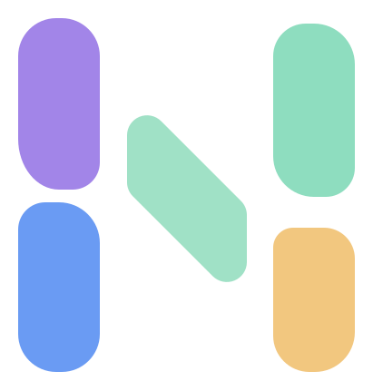

Team workspace
Weekly coordination
Keep upcoming decisions and responsibilities visible to the whole team.
Nivo design system / Component layer
A production-minded, accessible UI library built directly from Nivo Foundations v1.2. Every pattern is semantic, keyboard usable, responsive, and ready to map into the product's eventual framework.

01 / ACTIONS
Use one primary action per decision area. Secondary and ghost actions reduce emphasis without reducing clarity.
Hierarchy
Sizes and icons
States
02 / INPUT
Labels remain visible. Help and error messages explain what users can do next rather than merely announcing failure.
Use the address connected to your school account.
Enter the six-digit ID provided by your district.
This value is managed by your administrator.
Long-form and combined inputs
Invitations expire after seven days.
03 / SELECTION
Checkboxes select multiple values, radios select one, and switches change an immediately applied setting.
Switches
04 / FEEDBACK
Semantic colors communicate system meaning. Logo pastels remain decorative and never replace success, warning, or danger states.
Badges
Alerts
New team member added
All changes saved
Review before Friday
We could not save this update
Progress and skeleton
05 / CONTAINERS
Cards group related content. They should not become a default wrapper for every element on a page.
Team workspace
Keep upcoming decisions and responsibilities visible to the whole team.
Next deadline
Due Friday. Two sections still need an owner before the final review.
Current period
07 / DATA
Tables preserve scanability through alignment, restrained dividers, meaningful status labels, and clear sort behavior.
| Status | Actions | |||
|---|---|---|---|---|
ACAvery Chen | Review service plan | May 24 | Due soon | |
JMJordan Miles | Confirm meeting notes | May 27 | In progress | |
RSRiley Singh | Approve final update | May 30 | Draft | |
MOMorgan Ortiz | Upload supporting records | May 20 | Complete |
08 / OVERLAYS
Tooltips clarify unfamiliar controls, menus expose compact actions, toasts confirm outcomes, and dialogs interrupt only for decisions that need focus.
09 / ZERO STATES
Empty states explain why the area is empty and offer one clear way forward. Avoid decorative character illustrations.
Create a shared plan to keep responsibilities, decisions, and upcoming dates visible to your team.